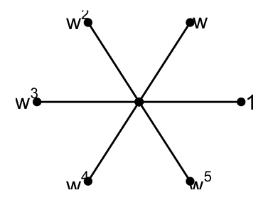

Chapter 3 Cayley Graphs
Monday, January 25, 1993
Given graphs \(\Gamma = (X, E)\) and \(\Gamma' = (X', E')\).
Definition 3.1 A map \(\sigma: X \to X'\) is an isomorphism\index{isomorophism of graphs whenever;
- \(\sigma\) is one-to-one and onto,
- \(xy\in E\) if and only if \(\sigma x \sigma y \in E'\) for all \(x, y\in X\).
We do not distinguish between isomorphic graphs.
Definition 3.2 Suppose \(\Gamma = \Gamma'\). Above isomorphism \(\sigma\) is called an automorphism of \(\Gamma\). Then set \(\mathrm{Aut}(\Gamma)\) of all automorphisms of \(\Gamma\) becomes a finite group under composition.
Definition 3.3 If \(\mathrm{Aut}(\Gamma)\) acts transitive on \(X\), \(\Gamma\) is called vertex transitive.
Example 3.1 A Cayley graphs:
Definition 3.4 (Cayley Graphs) Let \(G\) be any finite group, and \(\Delta\) any generating set for \(G\) such that \(1_G \not\in \Delta\) and \(g\in \Delta \to g^{-1}\in \Delta\). Then Cayley graph \(\Gamma = \Gamma(G, \Delta)\) is defined on the vetex set \(X = G\) with the edge set \(E\) define by the following.
\[E = \{(h_1,h_2)\mid h_1, h_2\in G, h_1^{-1}h_2\in \Delta\} = \{(h, hg) \mid h\in G, g\in \Delta\}\]
Example 3.2 \(G = \langle a \mid a^6 = 1\rangle\), \(\Delta = \{a, a^{-1}\}\).
Example 3.3 \(G = \langle a \mid a^6 = 1\rangle\), \(\Delta = \{a, a^{-1}, a^2, a^{-2}\}\).
Example 3.4 \(G = \langle a, b \mid a^6 = 1, b^2, ab = ba\rangle\), \(\Delta = \{a, a^{-1}, b\}\). 
Remark. \(\mathrm{Aut}(\Gamma) \simeq D_6\times \mathbb{Z}_2\) contains two regular subgroups isomorphic to \(D_6\) and \(\mathbb{Z}_5 \times \mathbb{Z}_2\) and \(\Gamma\) is obtained as Cayley graphs in two ways.
Cayley graphs are vertex transitive, indeed.
Theorem 3.1 The following hold.
\[G \to \mathrm{Aut}(\Gamma) \; (g\mapsto \hat{g})\] is an injective homomorphism of groups, where \[\hat{g}(x) = gx \quad \textrm{for all }\: g\in G \textrm{ and for all } x\in X (= G).\] Also, the image \(\hat{G}\) is regular on \(X\). i.e., the image \(\hat{G}\) acts transitively on \(X\) with trivial vertex stabilizers.
\[\Delta = \{g\in G\mid \langle x, g(x)\in E\}.\] Then \(1\not\in \Delta\), \(g\in \Delta \to g^{-1}\in \Delta\), and \(\Delta\) generates \(G\). Moreover, \(\Gamma \simeq \Gamma(G, \Delta)\).
Proof. \((i)\) Let \(g\in G\). We want to show that \(\hat{g}\in \mathrm{Aut}(\Gamma)\). Let \(h_1, h_2\in X = G\). Then, \[\begin{align} (h_1, h_2)\in E & \to h_1^{-1}h_2\in \Delta\\ & \to (gh_1)^{-1}(gh_2)\in \Delta \\ & \to (gh_1, gh_2)\in E\\ & \to (\hat{g}(h_1), \hat{g}(h_2)) \in E. \end{align}\] Hence, \(\hat{g}\in \mathrm{Aut}(\Gamma)\).
Observe: \(g \mapsto \hat{g}\) is a homomorphism of groups: \[\hat{1}_G = 1, \; \widehat{g_1g_2} = \widehat{g_1}\widehat{g_2}.\]
Observe: \(g \mapsto \hat{g}\) is one-to-one: \[\widehat{g_1} = \widehat{g_2} \to g_1 = \widehat{g_1}(1_G) = \widehat{g_2}(1_G) = g_2.\]
Observe: \(\hat{G}\) is regular on \(X\): Clear by construction.
\(g\in \Delta \to g^{-1}\in \Delta\): \[g\in \Delta \to (x, g(x))\in E \to E \ni (g^{-1}(x), g^{-1}(g(x))) = (g^{-1}(x), x).\]
\(\Delta\) generates \(G\): Suppose \(\langle \Delta \subsetneq G\). Let \(\hat{X} = \{g(x)\mid g\in \langle \Delta\rangle\} \subsetneq X\). (\(\hat{X} \subsetneq X\) as \(G\) acts regularly on \(X\).)
Since \(\Gamma\) is connected, there exists \(y\in \hat{X}\) and \(z\in X\setminus \hat{X}\) with \(yz\in E\).
Let \(y = g(x)\), \(g\in \langle \Delta\rangle\), \(z\in h(x)\), \(h\in G\setminus \langle \Delta\rangle\). Then \[(y,z)=(g(x),h(x))\in E \to (x,g^{-1}h(x))\in E \to g^{-1}h\in \langle \Delta \rangle \to h\in \langle \Delta \rangle. \] This is a contradition. Therefore, \(\Delta\) generates \(G\).
Let \(\Gamma' = (X', E')\) denote \(\Gamma(G, \Delta)\). We shall show that \[\theta: X' \to X \; (g\mapsto g(x))\] is an isomorphism of graphs.
\(\theta\) is one-to-one: For \(h_1, h_2\in X' = G\), \[\theta(h_1)=\theta(h_2) \to h_1(x) = h_2(x) \to h_2^{-1}h_1(x)=x \to h_2^{-1}h_1\in \mathrm{Stab}_G(x) = \{1_G\} \to h_1 = h_2.\] (\(\mathrm{Stab}_G = \{g\in G\mid g(x) = x\}\).)
\(\theta\) is onto: Since \(G\) is transitive, \[X = \{g(x)\mid g\in G\} = \theta(X') = \theta(G).\]
\(\theta\) respects adjacency: For \(h_1, h_2\in X' = G\), \[(h_1,h_2)\in E' \leftrightarrow h_1^{-1}h_2\in \Delta \leftrightarrow (x, h_1^{-1}h_2(x))\in E \leftrightarrow (h_1(x),h_2(x))\in E \leftrightarrow (\theta(h_1), \theta(h_2))\in E.\] Therefore \(\theta\) is an isomorphism between graphs \(\Gamma(G, \Delta)\) and \(\Gamma(X, E)\).
How to compute the eigenvalues of the Cayley graph of and abelian group.
Let \(G\) be any finite abelian group. Let \(\mathbb{C}^*\) be the multiplicative group on \(\mathbb{C}\setminus \{0\}\).
Definition 3.5 A (linear) \(G\)-character is any group homomorphism \(\theta: G \to \mathbb{C}^*\).
Example 3.5 \(G = \langle a\mid a^3 =1\rangle\) has three characters, \(\theta_0, \theta_1, \theta_2\). \[ \begin{array}{c|ccc} \theta_i(a^j) & 1 & a & a^2 \\ \hline \theta_0 & 1 & 1 & 1\\ \theta_1 & 1 & \omega & \omega^2\\ \theta_2 & 1 & \omega^2 & \omega \end{array}, \quad \textrm{with }\; \omega = \frac{-1+\sqrt{-3}}{2}. \] Here \(\omega\) is a primitive cube root pf \(q\) in \(\mathbb{C}^*\), i.e., \(1+\omega + \omega^2 = 0\).
For arbitraty group \(G\), let \(X(G)\) be the set of all characters of \(G\).
Observe: For \(\theta_1, \theta_2\in X(G)\), one can define product $_1_2: \[\theta_1\theta_2(g) = \theta_1(g)\theta_2(g) \quad \textrm{for all }\; g\in G.\] Then \(\theta_1\theta_2\in X(G)\).
Observe: \(X(G)\) with this product is an (abelian) group.
Lemma 3.1 The groups \(G\) and \(X(G)\) are isomorphic for all finite abelian groups \(G\).
Proof. \(G\) is a direct sum of cyclic groups; \[G = G_1\oplus G_2 \oplus \cdots \oplus G_m, \quad \textrm{where } \; G_i = \langle a_i\mid a_i^{d_i} = 1\rangle \quad (1\leq i\leq m).\] Pick any alement \(\omega_i\) of order \(d_i\) in \(\mathbb{C}^*\), i.e., a primitive \(d_i\)-the root of \(1\). Define \[\theta_i: G \to \mathbb{C}^* \quad (a_1^{\varepsilon_1}\cdots a_m^{\varepsilon_m} \mapsto \omega_i^{\varepsilon_i} \quad \textrm{where }\; 0\leq \varepsilon_i < d_i, 1\leq i\leq m).\] Then \(\theta_i\in X(G)\). (Exercise)
Claim: There exists an isomorphism of groups \(G \to X(G)\) that sends \(a_i\) to \(\theta_i\).
Observe: \(\theta_i^{d_i} = 1\). For every \(g = a_1^{\varepsilon_1}\cdots a_m^{\varepsilon_m} \in G\), \[\theta_i^{d_i}(g) = (\theta_i(g))^{d_i} = (\omega_i^{\varepsilon_i})^{d_i} = (\omega_i^{d_i})^{\varepsilon_i} = 1.\] Observe: If \(\theta_1^{\varepsilon_1}\theta_2^{\varepsilon_2}\cdots \theta_m^{\varepsilon_m} = 1\) for some \(0\leq \varepsilon_i < d_i, 1\leq i\leq m\). Then \(\varepsilon_1 = \varepsilon_2 = \cdots = \varepsilon_m = 0\).
Pf. \(1 = \theta_1^{\varepsilon_1}\theta_2^{\varepsilon_2}\cdots \theta_m^{\varepsilon_m}(a_i) = \omega_i^{\varepsilon_i}\), Since \(\omega_i\) is a primitive \(d_i\)-th root of \(1\), \(\varepsilon_i = 0\) for \(1\leq i\leq m\).
Observe: \(\theta_1, \ldots, \theta_m\) generate \(X(G)\). Pick \(\theta\in X(G)\). Since \(a_i^{d_i} = 1\), \(1 = \theta(a_i^{d_i}) = \theta(a_i)^{d_i}\).
Hence \(\theta(a_i) = \omega^{\varepsilon_i}\) for some \(\varepsilon_i\) with \(0\leq \varepsilon_i < d_i\).
Now \(\theta = \theta_1^{\varepsilon_1}\cdots \theta_m^{\varepsilon_m}\), since these are both equal to \(\omega_i^{\varepsilon_i}\) at \(a_i\) for \(1\leq i \leq m\).
Therefore, \[G \to X(G) \quad (a_i \mapsto \theta_i)\] is an isomorphism of groups.
Note. The correspondence above is clearly a group homomorphism.